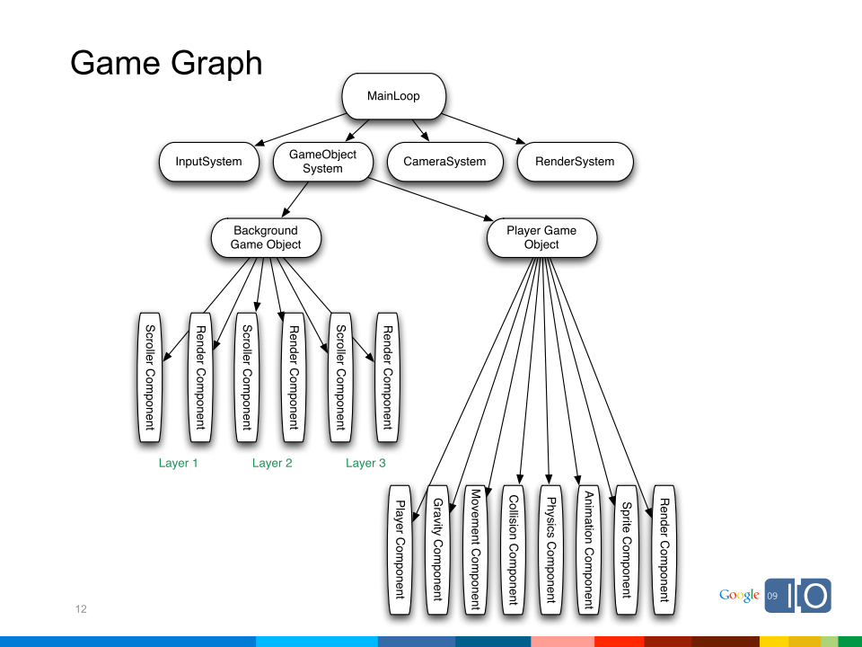
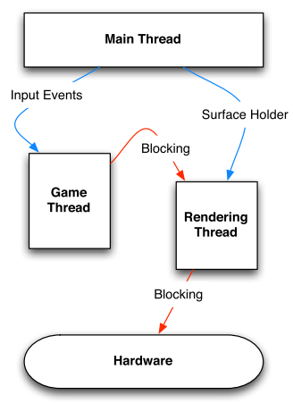

Writing Real-Time Games for Android
[homepage] [index]
Chengzhi Yang 2011-01-23
为Android编写实时游戏
学习笔记
这篇文章是Chris Pruett 在Google I/O 2009的一个演讲视频的笔记。我翻译了大部分的演讲的演示稿，里面有不少疏漏，臆断和错误都是我记录的时候造成的，与演讲作者无关。本文的版权归演讲作者所有。转载请保留演讲作者的信息和本文链接。
你可以从下面的链接进入该主题在Google I/O 2009 的原文里面含视频和演示稿。http://www.google.com/events/io/2009/sessions/WritingRealTimeGamesAndroid.html 演示稿的直接连接：http://dl.google.com/io/2009/pres/WritingRealTimeGamesforAndroid.pdf 演讲作者所制作的Android开源(apcha 2.0)游戏 Replica Island : http://replicaisland.net/ http://replicaisland.blogspot.com/ 该游戏的开发笔记！
为什么要在Android平台上面开发游戏？
- 传统PC和控制台游戏市场都变得高风险，只有很少的公司能够承担。
- 在非传统游戏平台上面的小游戏持续赢得了那些原来在传统游戏平台上面的玩家和新玩家的亲睐。
- 新平台参照：Nintendo Wii, iPhone, Flash, XBLA,等。
- 低风险=更有趣+更多样的内容。
- Android给开发游戏提供了一个面向广泛的，熟悉互联网受众的渠道。（指的是那些需要打电话也需要在手机里面玩游戏的人）
为什么这个游戏是在Android平台上？
- 我做这个游戏的三个目标：
- 给Android制作一个有趣的游戏。
- 制作一个可复用，开源的游戏引擎让大家为Android开发游戏。
- 对Android平台进行压力测试：只使用已经公开的代码和工具来制作游戏。
- 我计划做一个传统的2D卷轴类游戏。
- 视差层（近景远景不同的移动速度），基于图块（tile-based），精灵动画（animated sprites），等。
- 引入所有的硬件按钮：输入系统，OpenGL ES, 声音，等。
- 这个游戏可能需要一个20%的工程师（即作者，20%是说作者每个星期用一天时间来开发这个游戏）开发6个月的时间和一个全职美工开发4个月的时间。
- 游戏的工具写起来非常的简单。
作者用G1演示了Replica island的demo。
- 游戏引擎的架构
- 有许多的实现方法，但是基础的问题都差不多。
- 我的实现方法是一个可以在每一帧都被遍历的“游戏图”（Game Graph）,可以获取时间和移动事件作为输入，结果记录在一个清单里面来画出画面。（这里的Grahp在大多数情况下你也可以理解成树结构）
- 所有图形的“根”(root)都是“main loop”。
- main loop 的所有子节点每帧都被调用一次。（所有的子节点都可以拥有他自己的子节点）
- 在树中更底层的节点有可能同样被每帧调用一次，这取决于他的父节点。
- “game objects”是“game manager”的一个节点，”game manager”保证只访问那些在以摄像机为中心的一个圆形心区域内的节点。（译者：其实做了类似于场景管理的工作）
- ”game objects”他们本身就是“game components”的子图，每个component 都可以实现自己特定的功能，比如自己特有的更新循环（update loop）。

至少我是这样做的。 关键点：时间传递给每一个在graph中的节点，这样帧率独立于物体的运动就是可能的。（可以制作一些例如特定物体慢动作的效果！replica island里面实现了慢动作的效果）
另一个关键点：这个系统为每一帧把各个需要被渲染的物体收集到一个渲染列表中，但是这并不是真的把所有物体都渲染到屏幕里面。
### 游戏引擎架构-漂亮的线程，哟 我有三个线程： - 主线程(main thread)是由Android activity生成的。 负责引导游戏和接收输入事件。（引导即为负责整个游戏的生命周期） 在大多数情况下这个线程是休眠状态。 - 游戏线程（game thread）。 负责处理所有非渲染部分，包括：物理，AI，碰撞检测，动画，等。 这个线程还负责 game graph。（graph就是前文提到的类似于场景管理的树结构） - 渲染线程（rendering thread）。 这个线程被 SurfaceHolder所控制。 仅根据他的渲染列表来运行，他还会为每一帧触发OpenGL命令。—对于游戏的内容他什么都不知道。

写快速的Java代码
这里说的Java是指的是android平台下的Java。 Java给你提供了非常丰富的现成的功能。
我爱咖啡，我爱茶
- 我很大程度上是一个C++工程师
- 实际上，我在这个项目之前没有写过一行Java代码。
- 所以对于我给你的Java上的意见，你应该持保留态度。
- 在过去的六个月的时间里面我做了许多优化工作，可能在某种程度上对于Java程序是没有必要的，也许我可以提供一些有用的花絮。
- 写一个实时游戏就是一个在灵活性(flexibility)和性能上面寻找最佳平衡点的练习。
- 我的（非语言特性）方法是：
- 从尽可能简单的实现开始，但是要为未来的重做而进行设计。
- 选择灵活性作为工作的重头而不是速度，直到速度慢到影响游戏操作。
- 对于游戏的整体构想的制定要尽早和保持不变。（profile early and constantly）要保证知道自己现在在做什么。
关于JAVA的意见
第一步：内存管理
- 绝对不要分配和释放内存。
- 呃～绝对不要在游戏被玩（gameplay）的过程中分配内存。
- GC（垃圾回收）将会让你的游戏卡住100~300 ms(毫秒)。这对于实时游戏来说是很致命的！你不会想要GC在你的游戏进行过程中被触发。（译注：演讲在2009年，当时htc g1还是主流手机，作者演示游戏用的也就是g1，所以这真的是个大问题，但就算现在的那些高端手机对于这个问题也要慎重。）
- 改进：尽可能多的在游戏进行之前分配好内存，不要释放任何内存，直到游戏有一个自然的暂停时间。手动调用GC在你知道那个时候是安全的。（比如在两个关卡交替的时候）
- 使用DDMS去追踪分配。
- 嘿，Java分配内存是持续不断的，呃！
- 把分配隐藏到类似于 enum.values(), Class.getClassName(), Iterator, HashMap, Arrays.sort 等等。
- 其中的一些是内存分配是没有办法避免的，但是要尽可能的保证GC不要在游戏过程中频繁运行。
对Java内存分配的误解 * 把Java当作是C++来用。 * 许多标准的Java实用对象分配内存。 - Collections过时了 - 把enums忘记吧（他们真的很重量级） - Arrays.sort()也类似 - 所有返回String 的地方都必须是只读的（比如Class.getXXX();） * DDMS是你的命名和查错的工具。 * 比我更好的Java工程师也许可以给你更多的关于减少使用内存分配的实现方法。
第二步：不要调用函数
- OK，这很极端。但是函数调用的开销很大并且你不能依靠内联(inlining)函数。
- 尽最大可能的使用静态函数（static functions）。
- 不要通过interface(这里的interface指的是Java的interface即接口)来调用一个函数，这会比普通虚函数慢30%！
- 存取器(Accessors) 递变因子(Mutators)是我在C++的最好的朋友，但是他们在你的Java中的内部循环中没有位置。
- 要警惕JNI函数。
- 尤其是：许多的gl.glXX() 函数。（JNI 会花费很多时间）
第三步：其他的技巧
- 使用本地变量，尤其是在内循环里面。
- 尽可能的在fields（译注：据我理解也就是Java的”成员变量”部分）中使用final关键字。
- 许多硬件（像G1）都没有FPU，因此要避免浮点运算。
- 尽量使用像Log.d()或类似的System.out.print(). 打印出信息是很花费时间的。
- 使用Traceview
高效的在屏幕上面画出东西
Android 渲染方法
- Canvas:
- 基于CPU的2D渲染。用于几乎所有的Android UI渲染上面。
- 对于小量的位块(blits)渲染比较快.(在我的测试中：10个sprites以内<16ms每帧)
- 非常的直接和便于使用。
- OpenGL ES
- 2D和3D渲染。
- 在许多平台下面（比如G1）是被硬件加速的。
- 可以用在比Canvas复杂得多的画面上。
- 许多2D渲染的方法：
- 正投影下的四边形(quads)。
- VBO 四边形（在支持的平台下）。
- draw_texture 扩展 （在支持的平台下），在使用这些OpenGL ES 的扩展时要进行检查。
- 只有OpenGL ES 1.0 是确保支持的。（）
作者对draw_texture, VBOs, Basic Quads, 和 Canvas在G1上面做了一个对比。在小于十个sprite的情况下四个都差不多，但随着sprite数量的上升，Basic Quads和Canvas的时间消耗增加的非常快，在1000个Basic Quads比Canvas快大约1/20，VBOs的时间消耗只是Basic Quads 的50%，而draw_texture又只是VBOs的55%。
哪种方法最好？
- 很显然，对于G1上的2D渲染OpenGL ES+ draw_texture 扩展是最快的.
- 但是这个扩展并没有得到所有设备的支持，你必须使用前进行检查！ glGetString(GL10.GL_EXTENSIONS)在用他之前。
- 然而，Canvas并没有那么差…
- 在每帧里面只有很少的几个东西需要渲染的时候。或者，
- 你不需要每帧都渲染的情况（比如解谜游戏）
- SpriteMethodTest 提供了一个框架生成这些渲染方法（并且对他们进行计时）这个项目基于我的游戏代码。
例子学习：渲染一个图块(Tiled)背景
- Replica Island 用了三种背景层：一个大的静态图片，一个中等的图块图（tile-map），和前景图块图(tile map)。
- 图块图层是用32*32的图块组成的。这就意味着在一个给定的帧里面用150个图块来绘制一个层（最坏情况下）
- 更多的层会更好，但是渲染背景是Replica Island里面单个操作中最花费时间的。
- 实际上，单个的静态图片很快。它只是一个 512*512的纹理。
- 图块图耗费每一帧的时间，不论是CPU的还是GPU的，这取决于渲染方法。
- 第一个想法：用一个图片集纹理作为图块图，用draw_texture画出来，调整在纹理上面的一个图片区域选取为独立的图块。（就像大多数PC游戏一样，把所有图片都放在一个大图片里面，要使用大图片里面的某一个小图片就要调整一个坐标）
- 这个方法只需要调用一次 glBindTexture()，这很不错。
- 另外，这是一个非常糟糕的点子！ glTexParameteriv() 非常的耗费时间！
- 孩子记住，改变状态在固定功能硬件（fixed-function hardware）上面是非常耗时的！
- 第二个想法：用draw_texture扩展独立的渲染每个图块，用大量的小图片。
- 通过一些简单的优化后（RLE tile map等）这事实上运行得非常好
- 但它任然需要许多的OpenGL调用。最坏情况下有300+的glDrawTexfOES()调用，再加上不必要的glBindTexture调用。
- 平均情况下是好的：硬件渲染时间小于16 ms。但实际提交图块（tiles）到OpenGL取决于层的稀疏程度：2-10 ms
- 最坏情况是:9-13 ms 执行GL调用加上19-23 ms渲染。这个方法不能接受。
- 第三个想法：把“元图块”（meta tiles）从顶点数组中移出来，用纹理的UV坐标把他们定义在
一个图集纹理中，然后用正交投影来映射他们。
- 初始结果是用“基础的顶点四边形”在SpriteMethodTest来测试的:非常糟糕。
- 切换到VBOs速度提升了不少。
- 这种实现的优势：只需要调用一次glBindTexture()，只需要很少次数的对GL命令的调用（在每帧每个层中只有4个图元需要渲染）
- 最坏情况的解决方案（两层非空图块）比draw_texture方法快很多。CPU只花费3-5 ms提交到GL，而渲染只需要少于16MS的时间。
- 平均情况和最坏情况是一样的！平均情况下这比draw_texture稍微慢一点。（大多数图集（maps）非常的稀疏）
- 最后一个想法：预渲染图块图集(title map)然后把它分割成可以用VBOs或draw_texture渲染的元图块纹理。
- 我还没有实现这个方法。
- 如果使用这个方法关卡的大小就会被VRAM限制（显存）。
- 高主内存的消耗。
- 但是可用的信息表明，用这个方法来渲染应该会非常非常快。
- 我很接近于60hz了，现在大概也不是必要的了。
- 将来对Android’s GL接口（或者G1 GL 驱动）的提高之后，可能这些方法都不是必须的了。
性能技巧
- 触碰屏幕导致你的应用被 MotionEvents 充满。
- 这可能会摧毁你的帧率。
- 在TouchEvent 回调函数里面使用 sleep可以减慢motionevents的洪流。16 ms是一个好的开始。
- 暂停和恢复在OpenGL的情况下是很晦涩难懂的，VRAM中的内容并不是总是保持着的。GLSurfaceView帮你解决这个问题。 – GLSurfaceView得当的为你处理状态机的问题。
- 如果是在带宽繁忙的情况下ATITC 纹理压缩（G1支持的）能够给你带来大的提高。
- Android 1.0-1.5在你使用VBOs的时候不能够正常的用间接缓冲给你抛出错误。结果是：不可预料的崩溃。
- 解决方案是只适用直接缓冲。
游戏设计技巧
- 让你的应用程序尽可能的小。2~3 mb 比较理想。
- 现在是有水准的游戏的时代。用户对好游戏很有需求，并且这个平台有能力制作出来好游戏。
- 现在已经有Android的设备不带硬键盘（比如HTC Magic） 或者轨迹球（ trackball， Samsung i7500）。不要让你的游戏操作依赖于这些输入设备（或者全部支持他们）。
- 在Android市场取胜的关键是质量。制作一个高质量的游戏可以得到公众的认可。美化你的游戏！